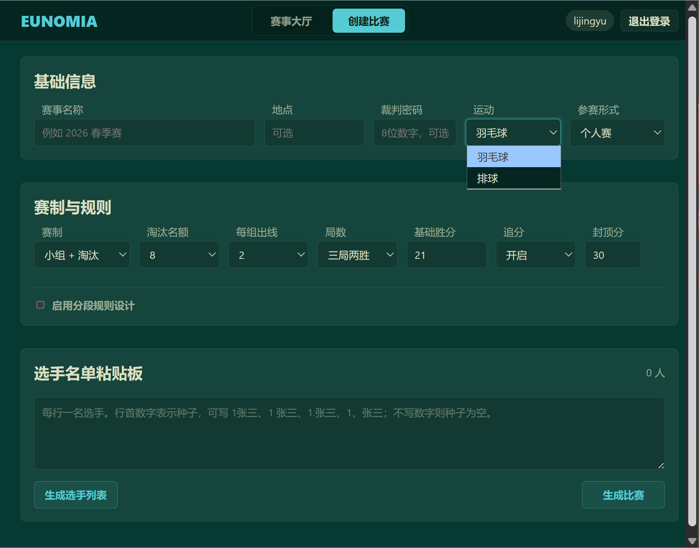
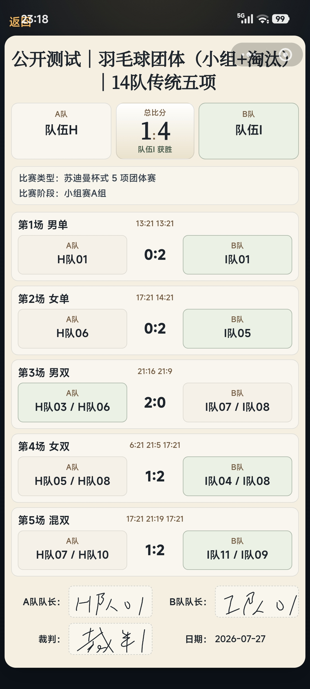

羽毛球个人赛
适合单打个人报名，支持纯淘汰、小组赛加淘汰、循环赛，记分后自动更新签表和小组积分。
个人参赛
自动晋级
赛事创建者负责赛事配置和赛程管理，裁判负责现场记分、阵容录入和结果确认。普通观赛者不是本文档的主要对象。
适合单打个人报名，支持纯淘汰、小组赛加淘汰、循环赛，记分后自动更新签表和小组积分。
支持苏迪曼杯五项和接力追分赛。系统把队伍、队员、单项阵容和父比赛结算串成完整闭环。
支持队伍录入、首发轮次、自由人、队长、换人、换边、事件记录和比赛记录回看。
系统不是单纯的记分板，而是把赛事创建、赛程生成、现场操作、结果沉淀放在同一条链路上。
文档按裁判和赛事创建者最常用的工作路径组织，可以直接跳到自己负责的比赛类型。
当前页面预留了截图位置。后续将真实小程序截图替换进对应占位区即可，建议同一章节使用同一场赛事的连续截图。


